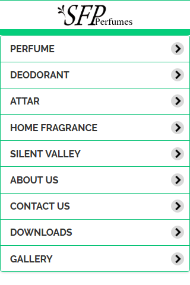
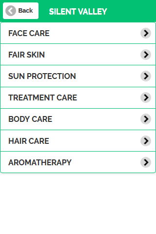
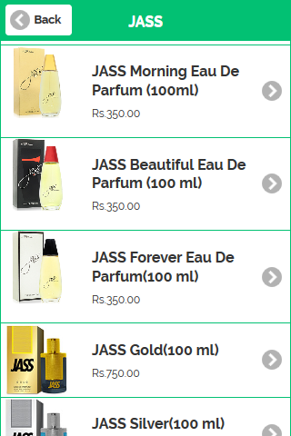
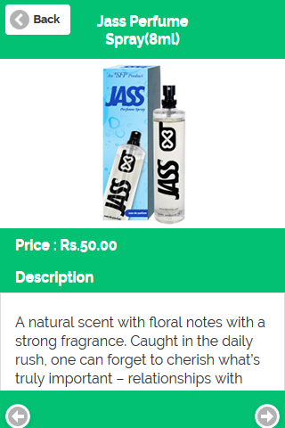

<div id="project">
	<section class="content">
		<div class="block-content">			
			<div class="project-title">
				<h2>SFP Perfumes Mobile App</h2>
				<p class="tags">Graphic / Apps</p>
			</div>
			<p class="project-description">Developed an internal product listing and internet free accessible cross-platform
mobile application for dealers and sales force of the company.
 Used JQuery Mobile for App UI
 Apache Cordova as a framework
 GitHub as version control repositor.
 Initiated Updates and maintenance of the application as required on Playstore</p>
			<div class="project-media">
				   &nbsp;
				  &nbsp;
				  &nbsp;
				  &nbsp;
			</div>        
		</div>
	</section>
 </div>

